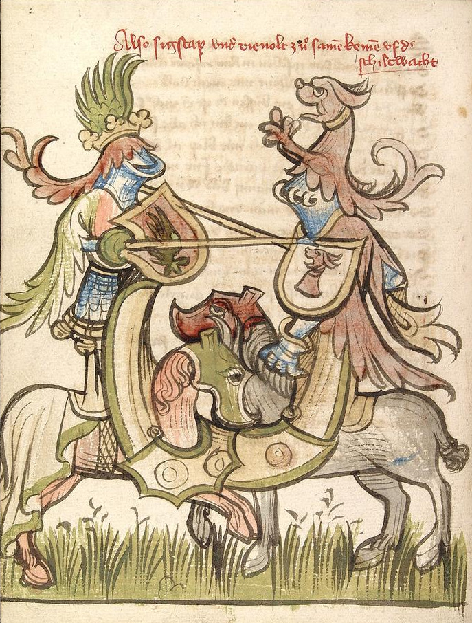
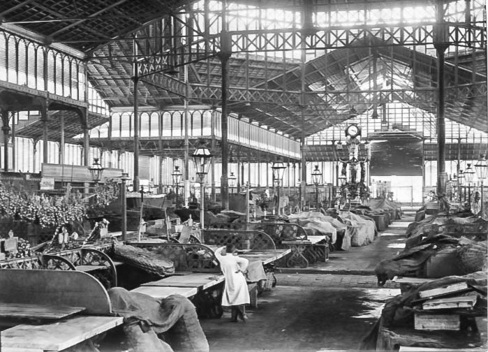
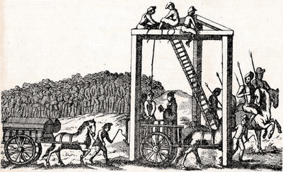
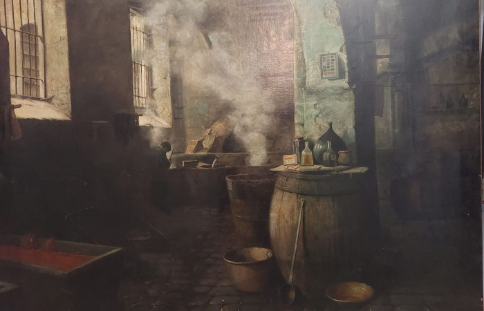

✕
Medieval Jousting in El Born

15th century depiction of a jousting tournament
In the 14th-16th centuries, El Born was the heart of Barcelona's noble district and hosted spectacular
jousting tournaments. The Plaça del Born served as an open-air arena where knights demonstrated their skills
before royalty and cheering crowds.

Arc de Triomf, built for the 1888 World's Fair but echoing Barcelona's medieval past
These tournaments were not just entertainment but crucial displays of military prowess. Winners gained
prestige, royal favor, and sometimes even the hand of noble ladies. The nearby Arc de Triomf, though built
later for the 1888 World's Fair, stands as a monument to this chivalric tradition.
✕
The Historic Born Market

The iron-and-glass structure of Mercat del Born
The iconic Mercat del Born, built in 1876, was Barcelona's first iron-framed structure and the city's main
food market until 1971. Its cast-iron columns and glass roof represent the industrial revolution's impact on
Barcelona's architecture.

Archaeological remains beneath the market
During renovations in 2002, workers discovered the remains of 1700s Barcelona beneath the market floor - an
entire neighborhood demolished after the 1714 siege. Today it houses one of Europe's most remarkable urban
archaeological sites, preserving the streets and foundations of homes destroyed during the War of Spanish
Succession.
✕
Justice and Bloodshed: El Born's Dark Legacy

Public executions were common spectacles in medieval Barcelona
For centuries, El Born served as Barcelona's primary execution ground, where justice was meted out in brutal
public spectacles. The area witnessed:
- Medieval punishments: Beheadings for nobility, hangings for commoners
- Religious executions: The Spanish Inquisition burned heretics here
- Political repression: Particularly after the 1714 siege

Methods of execution varied by social class and crime
The most infamous executions occurred after the War of Spanish Succession (1714), when Bourbon forces made
examples of Catalan leaders:
- President Rafael Casanova was executed despite his surrender
- 12 other council members were publicly hanged
- Over 4,000 citizens were forcibly relocated
Today, the subtle slope of Plaça del Born - designed to channel blood away - remains a sobering reminder of
this history. The annual September 11th memorials transform the square into a sea of flowers honoring these
martyrs of Catalan identity.
✕
The House of Mills: 12th Century Legacy

Medieval water mill similar to those in 12th century Barcelona
The house, originally built in the early 12th century, stood in a landscape shaped by uneven terrain, where
cascading waterfalls created the perfect conditions for constructing mills. These mills became the heartbeat
of the area, drawing numerous textile factories to the neighborhood and giving the street its enduring
nickname, "The Street of the Mills."

Francesc Llorens i Riu's painting of the dyeing workshops
As part of the Conjunto de Balsas de San Pedro—a complex dedicated to fabric dyeing—the house played a role
in the neighborhood's vibrant textile industry. This rich history is immortalized in Francesc Llorens i
Riu's painting Drycleaner's Shop on Basses Street in Sant Pere, a visual testament to the area's
industrial past.
✕
Forest Reverie: A Watercolor Journey

Sunlight filtering through ancient trees
The Symphony of Nature
This collection captures the profound joy of immersion in nature - the euphoria of sunlight through leaves,
the freedom of forest expanses, and the quiet celebration of being present. Each piece translates the
forest's visual poetry into watercolor harmonies.


Contemplation Made Visible
The impossible grandeur of trees - their fractal branches, their whispering leaves - once intimidated my
brush. Yet life's journey taught me to dive fearlessly into capturing this magic. My tracing technique
dissolves boundaries between materials, revealing nature's unified song.

Watercolor Alchemy
These works employ flowing water techniques to mirror nature's own liquidity - where pigments bloom like
morning mist, and brushstrokes dance with the randomness of falling leaves. The forest's joy becomes
tangible through the medium's spontaneous beauty.
✕
Faces: Windows to the Soul

Study in contemplation
The Silent Conversation
Every face tells an unspoken story - a topography of experiences etched in subtle lines and expressions. In
these portraits, I seek to capture those fleeting moments when the mask slips, revealing the vulnerable
humanity beneath the surface.

The Alchemy of Likeness
Portrait work is an act of mutual trust - the subject's courage to be seen, the artist's sensitivity to see
truly. With each stroke, we navigate the delicate balance between representation and interpretation, between
physical accuracy and emotional truth.

Faces as Landscapes
I approach each portrait as I would a landscape - observing how light sculpts planes and valleys, how
emotion colors the terrain. These studies explore the infinite variety of human expression, from quiet
contemplation to unrestrained joy.